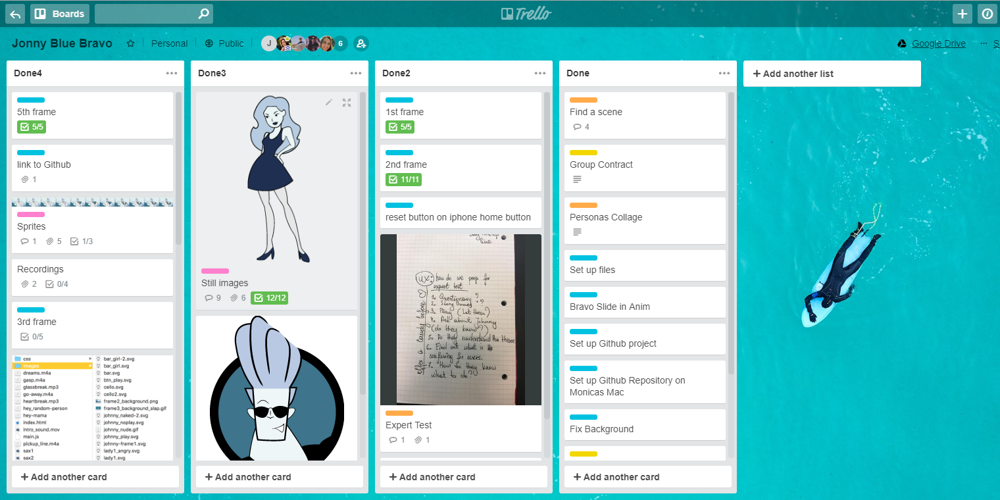
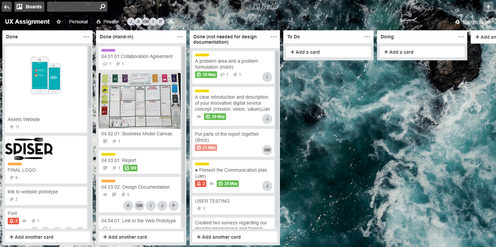

janwloczewski.dk
Business
In Theme 2 group project we used kanban chart. Even though, I used it already in Theme 1, this time I had a chance to work with it more professionally by using trello board.
Simple animation Project Pool 1 Project Pool 2
Storyboard Expert test
Screen cast Final project
In Theme 3 my group created a video based on material from the company, which in our case was Kobenhavns Kommune. Using these sources we introduced the end user to cycling rules in Copenhagen and set it in an online context.
Story without words Storyboard Promoting an ideaBasic User experience Theme was the first Theme with serious usage of business knowledge. I learned about the importance of having strategy for a company. I was also introduced to copyrighting methods. Our group created the strategy and Business Model Canvas which helped us to improve our idea and product.
Canvas model Report Design Documentation
Pitch presentation Website App prototype